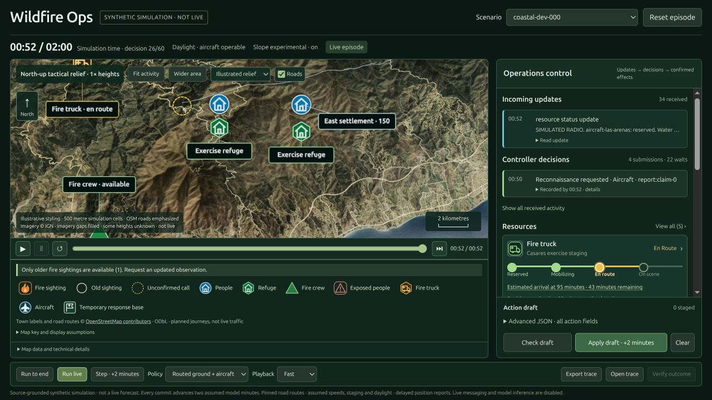

28 October 2026 · CPU fixture verification
Withdrawal mechanics fixed; real-world calibration remains open.
PR #38 is merged. Draft PR #41 adds separately versioned return-only buffer exit and a search that finds compliant detours. This report covers synthetic development exercises, not a real incident replay.
14 → 0
Late recovery exceptions across paired versions
6 complete days
1,440 minutes each; exact replay and independent reward
243 tests
No skips; includes HTTP and checkpoint replay
| Development case | Minutes | Replay / reward | Audit findings | Units withdrawing |
|---|
| incident-day-egress-v1-000 | 1440 | Exact / agreed | 0 | 5 |
| incident-day-egress-v1-001 | 1440 | Exact / agreed | 0 | 7 |
| incident-day-egress-v1-002 | 1440 | Exact / agreed | 0 | 5 |
| incident-day-egress-v1-003 | 1440 | Exact / agreed | 0 | 6 |
| incident-day-egress-v1-004 | 1440 | Exact / agreed | 0 | 4 |
| incident-day-egress-v1-005 | 1440 | Exact / agreed | 0 | 5 |
The rule
Return-only exit from the initial protective fire/wind buffer, with node/exit-state directed search and per-minute revalidation. Burning cells, exclusions, vehicle modes and supported walking terrain remain enforced.
Six new incident-day-egress-v1 IDs; existing twelve scenario identities and the frozen two-hour benchmark remain unchanged. Old results are not rescored.
Compute
One complete verified day: 25.67 seconds, 78.7 MiB peak process RSS. Six-case suite: 263.77 seconds, 81.6 MiB. The batch uses one CPU worker; concurrent regression tests mean these times are not a controlled speed comparison.
Remaining gates
- Physical and operational calibration is not established.
- Crew-only-access and destination-threat complications are not observed in these dispatcher runs; separate counterfactual mechanics tests pass, which is not coverage of difficult policy outcomes.
- All six development days have zero newly exposed population and high scores. This does not establish benchmark difficulty or model learning.
- Real-source fuel approval and complete road/passability coverage remain unresolved; estimates are not historical measurements.
- Docker execution remains unverified. No paid inference, GPU training or publication ran.
PR #41 stays draft · Issue #34 · Reward follow-up #27 · Machine-readable evidence · Reproduction and constraints
Core identity: d5d6483ae5ee3b42c2530d863165ba007d55a9b1d31db0bd0dc0f9769dd24278
README dashboard capture
The coastal two-hour dashboard, not the new day-mode run. On-screen source credits are preserved.

Screenshot attribution